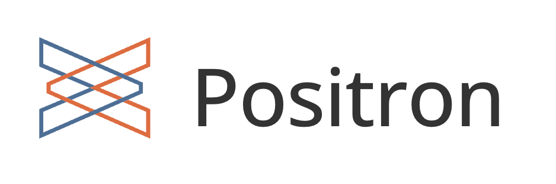
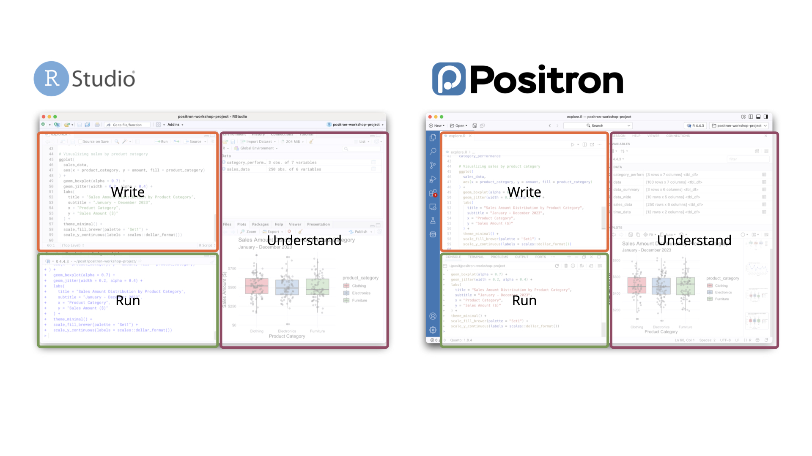
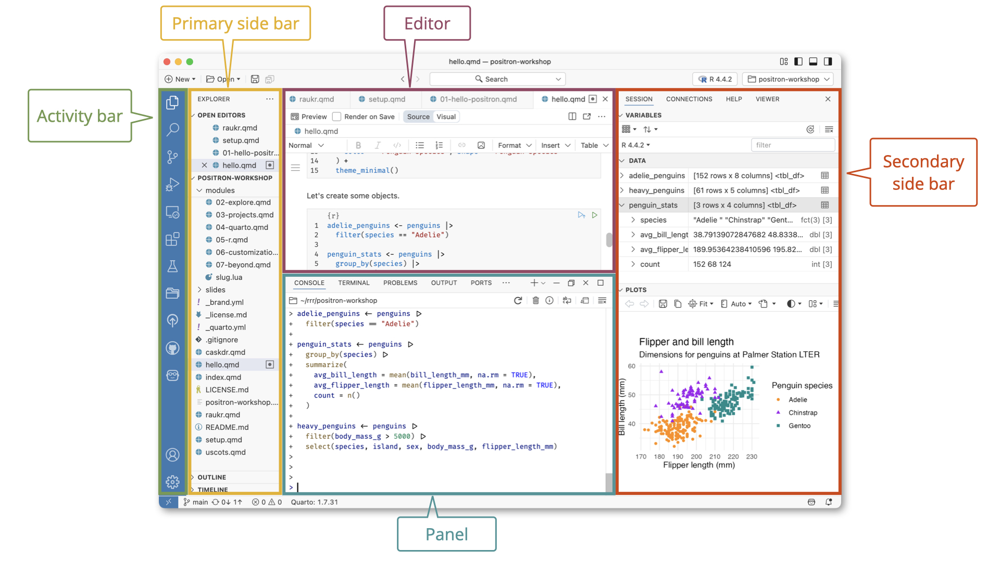
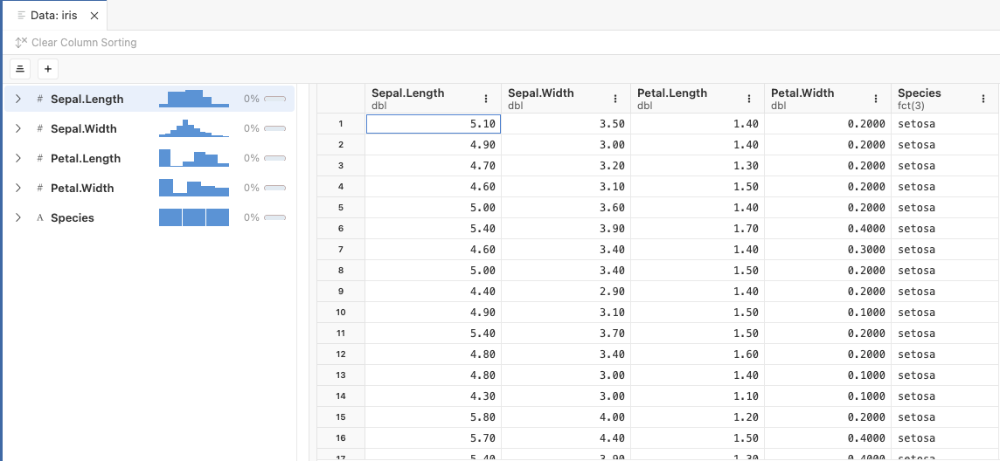
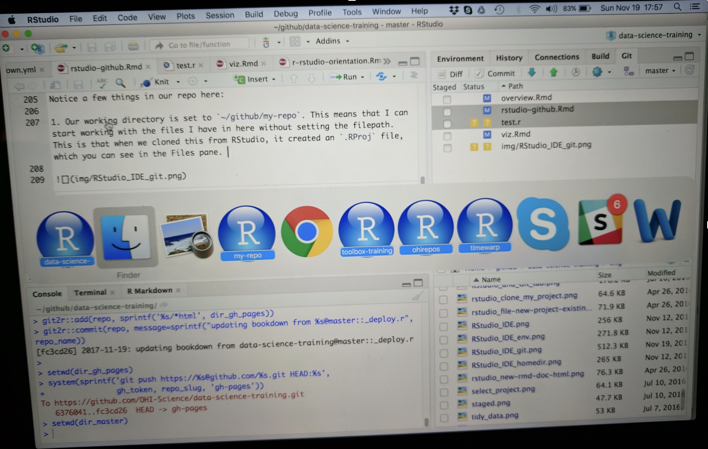
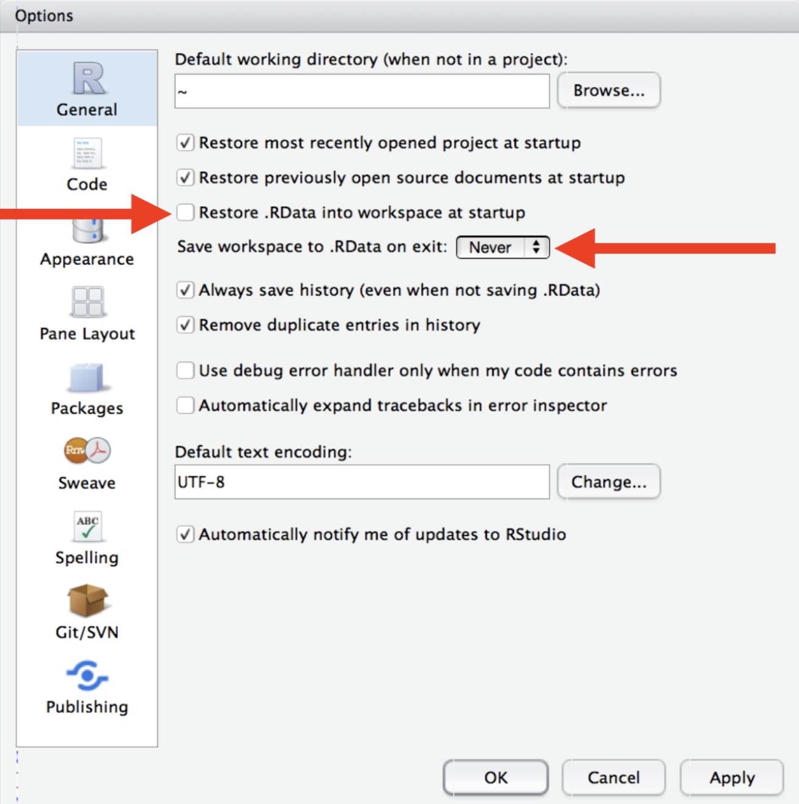
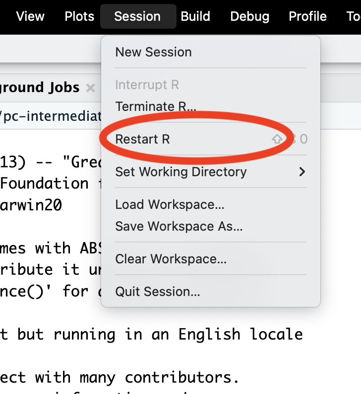
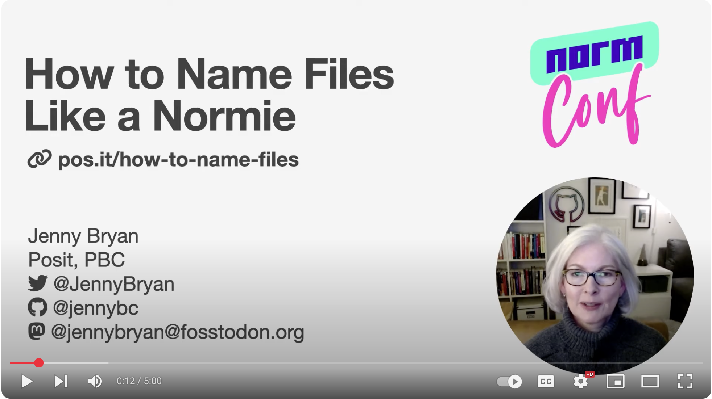

Creating Efficient Workflows in R
Parks Canada; Ecological Integrity Monitoring Program
Introductions

Yourselves
- Name
- Where you are
- What you work on
- Hardest thing about R
Resources
Workshop website: https://andyteucher.ca/pc-intermediate-r/
WTF Book: https://rstats.wtf/
Project-oriented workflows
- Concept of a project
- Project structure
- Embrace the blank slate
- Naming things
- File organization
Personal R administration
- Where do packages live?
- Installing and updating packages
- R Startup
.Rprofileand.Renvironfiles
Efficient use of your IDE
- Customizing your IDE
- Keyboard shortcuts
- Command palette
- Tab completion
- Autoformatting code
- Getting help: Reprexes
Getting started with Positron
- See “Migrating from RStudio” section
Layout
Layout
Keyboard shortcuts
Enable Rstudio keyboard shortcuts via:
Settings > Workbench > Keybindings: Rstudio Keybindings
Command palette
Access all the things
Ctrl + Shift + P
Extensions
Pre-installed
- Quarto
- Air
Other extensions
- Rainbow csv
- vscode-pdf
- Themes
Data Explorer
Project-oriented workflows
Often we are (or think we are) only doing our data work on our own
When we want to facilitate collaboration or focus on reproducibility, we need new strategies
What they Forgot to Teach You About R - Much of this material is distilled from this book.
Jenny Bryan is a hero in the R world.
An early adopter teaching R/GitHub as a prof at UBC, now at Posit
Learning objectives
Establish the concept of the project as the basic organizational unit of work.
Apply best practices in and leverage benefits of using a project-oriented workflow.
Creating robust file paths that travel well in time and space.
Constructing human and machine readable file names that sort nicely.
Differentiating workflow elements, analysis inputs, and analysis outputs in project structure to create navigable programming interfaces.
Restarting R frequently, with a blank slate.
Prerequisites
Be organized as you go, not “tomorrow”
Don’t fret over past mistakes.
Raise the bar for new work.
Prerequisite: Save code in scripts
Saving code is an absolute requirement for reproducibility. (Future you, future us)
Save commands as “scripts” (.R) or “notebooks” (.Rmd).
It doesn’t have to be polished.
Just save it!
Everything that really matters should be achieved through code that you save
Contrast: Series of unrecorded mouse clicks
The process is important, the product is just an outcome
- Outputs should be treated as disposable
- Scripts are the source of truth
Adopt a project-oriented workflow
Why
work on more than 1 thing at a time
collaborate, communicate, distribute
start and stop safely
How
dedicated directory
RStudio Project or Positron Workspace
Git repo, probably syncing to a remote
Project-oriented workflows
If the top of your script is
There is another path.
Project-oriented workflow designs this away. üôå
Project-oriented workflows
Organize your work into projects
One folder per project.
Report? R package? Chapter? Website? Whatever.
Can be the same unit as a GitHub Repo.
If using RStudio, it’s Project (capital P)
If using Positron, it’s Workspace
Each Project gets its own R instance
R starts at the project root working directory: all paths are relative to the project’s folder.
Project-oriented workflows
Organize your work into projects
my-project/
├── 01_read-data.R
├── 02_clean-data.R
├── 03_analysis.R
├── 04_output.R
├── R
├── README.md
├── data
│ ├── derived_data
│ └── raw_data
├── outputs
└── paper
├── paper.qmd
└── references.bibProject-oriented workflows
What does it mean to be an RStudio Project?
Open Project = dedicated instance of RStudio
- dedicated R process
- file browser pointed at Project directory
- working directory set to Project directory
RStudio leaves notes to itself in foo.Rproj
What does it mean to be a Positron Project Workspace?
Open Project = dedicated instance of Positron
- dedicated R process
- file browser pointed at Project directory
- working directory set to Project directory
Often just a project folder that’s been opened in its own window via Open Folder or similar
.git/directory.Rprojfile.vscode/settings.jsonfile_quarto.ymlfileDESCRIPTIONfilerenv.lockfile.herefile
Practice “safe paths”
The chance of setwd() having the desired effect – making the file paths work – for anyone besides its author is ~0%.
library(ggplot2)
setwd("/Users/andy/cuddly_broccoli/verbose/foofy/data")
df <- read.csv(“raw_foofy_data.csv”)
p <- ggplot(df, aes(x, y)) + geom_point()
ggsave("/Users/andy/cuddly_broccoi/ambiguous/fig.png")
It’s also unlikely to work for the author one or two years or computers from now.
Hard-wired, absolute paths, especially when sprinkled throughout the code, make a project brittle. Such code does not travel well across time or space.
Practice “safe paths”
relative to a stable base, not absolute paths.
use file system functions, not paste(), strsplit(), etc.
Practice “safe paths”
Instead of:
Or:
Practice “safe paths”
Set your work up as an RStudio or Positron Project/Workspace and use relative paths:
Or:
Work on multiple projects at once
Because each project uses an isolated R process
Which persist after rm(list = ls())?
| Option | Persists? |
|---|---|
A. library(dplyr) |
|
B. summary <- head |
|
C. options(stringsAsFactors = FALSE) |
|
D. Sys.setenv(LANGUAGE = "fr") |
|
E. x <- 1:5 |
|
F. attach(iris) |
02:00
Which persist after rm(list = ls())?
| Option | Persists? |
|---|---|
A. library(dplyr) |
|
B. summary <- head |
|
C. options(stringsAsFactors = FALSE) |
|
D. Sys.setenv(LANGUAGE = "fr") |
|
E. x <- 1:5 |
|
F. attach(iris) |
Start R with a blank slate
- Save code for reproducibility.
- When you quit: do not save the workspace to an
.Rdatafile. - When you start: do not reload the workspace from an
.Rdatafile. - In RStudio, set this via
Tools > Global Options. - Or use
usethis::use_blank_slate()

This is the default (and not customizable) in Positron
Restart R often
Session -> Restart R

Windows
Ctrl + Shift + F10
Mac
Cmd + Shift + 0
Project initiation: RStudio Project
- New folder + make it an RStudio Project
usethis::create_project("~/i_am_new")File -> New Project -> New Directory -> New Project
- Make existing folder into an RStudio Project
usethis::create_project("~/i_exist")File -> New Project -> Existing Directory
Project initiation: Positron Workspace
- New folder + make it a workspace
usethis::create_project("~/i_am_new", rstudio = FALSE)File -> New Folder From Template
- Open an existing directory as a workspace
usethis::create_project("~/i_exist", rstudio = FALSE)File -> New Project -> Existing Directory
Note: if you don’t specify rstudio = FALSE, it will create an RStudio .Rproj file. This does no harm.
Try either option now with a folder containing (or that will contain) Bivalve Data 2014-2022_ICE.csv.
Naming things
machine readable
human readable
sort nicely

Jenny Bryan “Naming things” video
NormConf · Dec 4, 2022:
Naming things
What features differentiate üòî vs üòç?
üòî
üòç
myabstract.docx
Joe’s Filenames Use Spaces and Punctuation.xlsx
figure 1.png
homework.R
JW7d^(2sl@deletethisandyourcareerisoverWx2*.txt
2018-01_teucher-abstract-conference.docx
joes-filenames-are-getting-better.xlsx
fig01_scatterplot-talk-length-vs-interest.png
2024-07-25_ecol-455_assignment-5.R
1986-01-28_raw-data-from-challenger-o-rings.txt
01:00
Names machines like
- don’t leave white space
- use letters, numbers, hyphens and underscores… that’s it
(characters like ^.*?+|$ can have a special meaning)
- be consistent with case
(some operating systems treat a and A the same, some differently).
- use separator characters wisely
use underscore _ to separate different chunks
use hyphen - for words in the same chunk
This creates names that are regular expression and globbing friendly, and easy to compute on! üéâ
Adapted from
https://djnavarro.net/slides-project-structure/#1.
Names humans like
name contains info on content
name anticipates context
concept of a slug üêå from user-friendly URLs
1986-01-28_
raw-data-from-challenger-o-rings.txtconcise, meaningful description
usually appended to the end
Names that sort nicely
put something numeric in there
left pad with zeros for constant width, nice sorting, 01
use the ISO 8601 standard for dates, YYYY-MM-DD
order = chronological or … consider common sense
ISO 8601

üëç file names
Intuitive sorting.
üëç file names
# A tibble: 2 × 1
files
<fs::path>
1 _examples/data/2024-07-16_site-2_plot-data.csv
2 _examples/data/2024-08-12_site-1_plot-data.csvEasy to filter in R (or the shell or whatever)
üëç file names
library(tidyr)
ft |>
mutate(files = path_ext_remove(files)) |>
separate(files, into = c("date", "site", "data_type"), sep = "_")# A tibble: 4 × 3
date site data_type
<chr> <chr> <chr>
1 "" examples/data/2024-07-16 site-2
2 "" examples/data/2024-07-25 site-2
3 "" examples/data/2024-08-12 site-1
4 "" examples/data/2024-08-18 site-1 Intentional delimiters means meta-data is easily recovered.
_ delimits fields; - delimits words
Rename the file Bivalve Data 2014-2022_ICE.csv to something that is machine readable, human readable, and sorts nicely.
Read the file in to R using a relateive path
Names matter
machine readable, human readable, and sort nicely
easy to implement NOW
payoffs accumulate as your skills evolve and
projects get more complex
Project structure
my-project/
├── 01_read-data.R
├── 02_clean-data.R
├── 03_analysis.R
├── 04_output.R
├── R
├── README.md
├── data
│ ├── derived_data
│ └── raw_data
├── outputs
└── paper
├── paper.qmd
└── references.bibPersonal R administration
Your R installation
R packages
R packages
- the natural unit for distributing R code
base R
14 base + 15 recommended packages
ships with all binary distributions of R
Additional packages
R Libraries - where do packages live?
- A library is a directory containing installed packages
- You have at least one library on your computer
- Common (and recommended) to have two libraries:
- A system library with base (14) and recommended (15) packages; installed with R.
- A user library with user-installed packages
- We use
library(pkg)function to attach a package - 7 base packages are always attached (base, methods, utils, stats, grDevices, datasets, graphics)
Where do packages live locally?
The system library (base/recommended packages).
.Library
All libraries for the current session
.libPaths()
All installed packages
installed.packages()
Your turn
- What libraries are in use in your current R session?
- Using
installed.packages(), what are the base and recommended packages?
Installing and updating packages
R Startup

R Startup
.Rprofile- contains R code to be run at the start of each session..Renviron- contains environment variables to be set in R sessions.
what to put in .Rprofile
- set a default CRAN mirror
- custom startup message
what not to put in .Rprofile
If it matters for code you share, it should not be in .Rprofile
why shouldn’t these go in .Rprofile?
library(tidyverse)f <- dplyr::filtertheme_set(theme_bw())
Why might these be safe to put in .Rprofile?
.Rprofile
.Renviron
- Set environment variables for R sessions
- Often sensitive information that you don’t want to share
Examples
- API Keys (Eg GitHub, ChatGPT etc)
- Database username and password
- Some R options
.Renviron
VAR_NAME=value
GOOGLE_API_KEY=your_api_key_here.Renviron
Access environment variables in R with Sys.getenv("VAR_NAME")
Your turn
- Create an environment variable in
.RenvironcalledMY_NAMEwith your name as the value. - Create a custom startup message in
.Rprofilethat gives you a personalized message when you start R.
Efficient use of your IDE
Customizing your IDE
- Pane layout
- Themes
- Fonts
- Positron extensions
Keyboard shortcuts
If in doubt, use the command palette: Ctrl + Shift + P
Navigation & Files
- Ctrl + Shift + N - New file
- Ctrl + S - Save current file
- Ctrl + F - Find in current file
- Ctrl + Shift + F - Find in files (global search)
- Ctrl + . - Go to file/function
- Ctrl + 1 - Focus source editor
- Ctrl + 2 - Focus console
Code Editing
- Ctrl + Shift + C - Comment/uncomment lines
- Tab - Indent selection
- Shift + Tab - Unindent selection
- Alt + Up/Down - Move line(s) up/down
- Alt + Shift + Up/Down - Duplicate line(s) ???
- Ctrl + X - Cut entire line (when no selection)
Magic of Multiple Cursors
- Ctrl + Alt + Up/Down - Add cursor above/below
- Ctrl + D - Add next occurrence of selected text (custom)
Navigation Within Code
- Ctrl + Left/Right - Jump word by word
- Home/End - Jump to beginning/end of line
- Ctrl + Home/End - Jump to beginning/end of document
- Ctrl + P - Jump to matching brace
R-Specific
- Tab - Auto-complete
- F1 - Show help for function under cursor
- Ctrl + Shift + F10 - Restart R session
- Ctrl + Shift + M - Insert pipe operator (
%>%or|>) - Alt + - - Insert assignment operator (
<-)
.Last.value
Shows last evaluated value in console
RStudio
- Tools > Global Options > General > Advanced > Show
.Last.valuein environment listing
Positron
Controlled by an option:
Automatic code formatting
Air: https://posit-dev.github.io/air/
- In charge of the layout of your R code.
- Formatters do not change the meaning of code
- Ensure that whitespace, newlines, and other punctuation conform to a set of rules and standards
Reprexes
Homework
Start using project-oriented workflows in your work
- Use RStudio or Positron Projects/Workspaces
- don’t use
setwd() - use relative paths
- Use a blank slate - restart R often
Try to name files well
- machine readable
- human readable
- sorts nicely (including ISO 8601 dates)
Use Positron or RStudio more efficiently
- use keyboard shortcuts
- use the command palette
- use Air